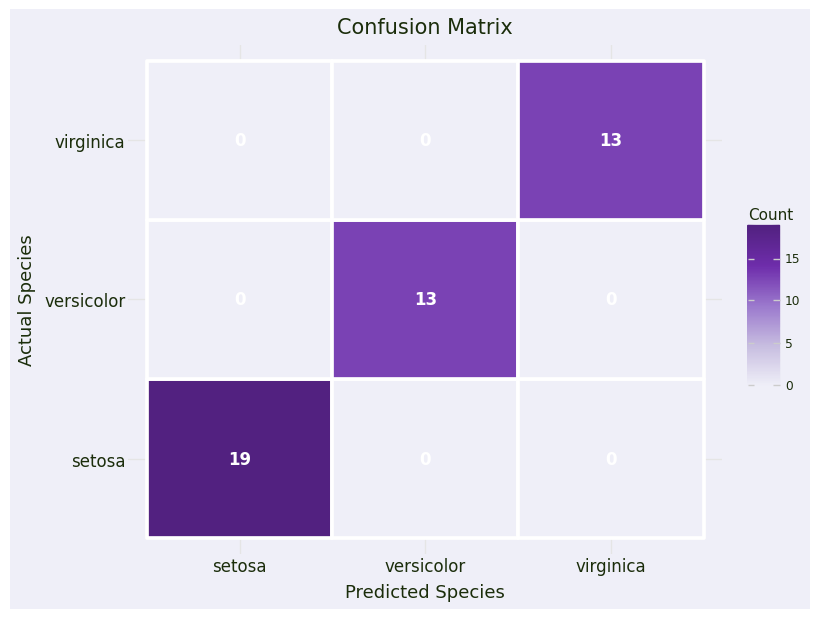
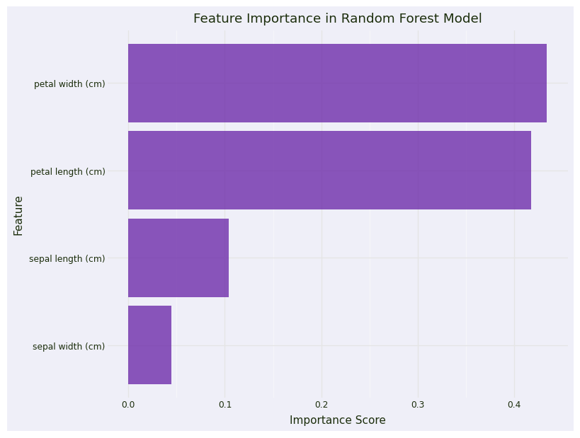
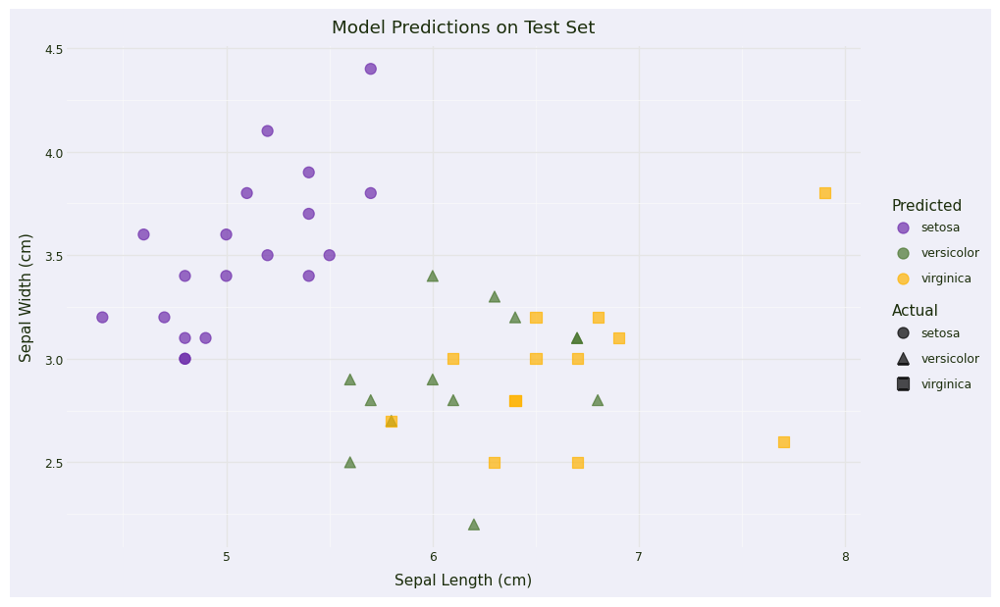

import numpy as np
import pandas as pd
from sklearn.datasets import load_iris
from sklearn.model_selection import train_test_split
from sklearn.preprocessing import StandardScaler
from sklearn.ensemble import RandomForestClassifier
from sklearn.metrics import accuracy_score, classification_report, confusion_matrix
from plotnine import *
from great_tables import GT
from quarto import theme_brand_plotnine, theme_brand_great_tables
from brand_yml import *Predicting Iris Flower Species with ML
Load Packages
We begin by loading all the required packages for ML and visualization.
Code
# my_brand = Brand.from_yaml(path='_brand.yml')
plot_theme = theme_brand_plotnine('_brand.yml')
table_theme = theme_brand_great_tables('_brand.yml')
theme_set(theme_minimal() + theme(
dpi = 100,
figure_size = (8, 6),
plot_title = element_text(size = 15),
axis_text = element_text(size = 12),
axis_title = element_text(size = 13)
))
color_palette = {
"discrete1": ["#6E2DAB", "#49752E", "#FFB300", "#D7263D", "#008B8B"],
"discrete2": ["#9B79CD", "#2F4F4F", "#B0C4DE", "#DAA520", "#A52A2A"],
"sequential1": ["#EFEFF8", "#C7BDE0", "#9B79CD", "#6E2DAB", "#522180"],
"sequential2": ["#EBF5E7", "#B8D3A8", "#82B471", "#49752E", "#30511F"],
"sequential3": ["#FFF8E1", "#FFDDA1", "#FFB300", "#CC8C00", "#996600"],
"diverging1": ["#A50F15", "#D7263D", "#F49C8F", "#FDF7EC", "#A5D6A7", "#49752E","#284A1A"],
"diverging2": ["#522180", "#6E2DAB", "#B6A0D9", "#FDF7EC", "#FFDDA1", "#FFB300","#CC8C00"]
}Load Data
The next step is to load the iris dataset from the scikit-learn module:
# Load the iris dataset
iris = load_iris()
X = iris.data
y = iris.targetIn addition to getting the target and features above, we also create a combined data frame for visualization:
# Create a DataFrame for easier manipulation
df = pd.DataFrame(X, columns=iris.feature_names)
df['species'] = pd.Categorical.from_codes(y, iris.target_names)
(
GT(df.head())
.tab_header(title="Iris Flowers")
).tab_options(**table_theme)| Iris Flowers | ||||
| sepal length (cm) | sepal width (cm) | petal length (cm) | petal width (cm) | species |
|---|---|---|---|---|
| 5.1 | 3.5 | 1.4 | 0.2 | setosa |
| 4.9 | 3.0 | 1.4 | 0.2 | setosa |
| 4.7 | 3.2 | 1.3 | 0.2 | setosa |
| 4.6 | 3.1 | 1.5 | 0.2 | setosa |
| 5.0 | 3.6 | 1.4 | 0.2 | setosa |
# Split the data
X_train, X_test, y_train, y_test = train_test_split(X, y, test_size=0.3, random_state=42)# Standardize features
scaler = StandardScaler()
X_train_scaled = scaler.fit_transform(X_train)
X_test_scaled = scaler.transform(X_test)# Train a Random Forest classifier
model = RandomForestClassifier(n_estimators=100, random_state=42)
model.fit(X_train_scaled, y_train)RandomForestClassifier(random_state=42)In a Jupyter environment, please rerun this cell to show the HTML representation or trust the notebook.
On GitHub, the HTML representation is unable to render, please try loading this page with nbviewer.org.
Parameters
| n_estimators | 100 | |
| criterion | 'gini' | |
| max_depth | None | |
| min_samples_split | 2 | |
| min_samples_leaf | 1 | |
| min_weight_fraction_leaf | 0.0 | |
| max_features | 'sqrt' | |
| max_leaf_nodes | None | |
| min_impurity_decrease | 0.0 | |
| bootstrap | True | |
| oob_score | False | |
| n_jobs | None | |
| random_state | 42 | |
| verbose | 0 | |
| warm_start | False | |
| class_weight | None | |
| ccp_alpha | 0.0 | |
| max_samples | None | |
| monotonic_cst | None |
# Make predictions
y_pred = model.predict(X_test_scaled)
# Evaluate the model
accuracy = accuracy_score(y_test, y_pred)
print(f"\n{'='*50}")
print(f"Model Accuracy: {accuracy:.2%}")
print(f"{'='*50}")
print("\nClassification Report:")
print(classification_report(y_test, y_pred, target_names=iris.target_names))
==================================================
Model Accuracy: 100.00%
==================================================
Classification Report:
precision recall f1-score support
setosa 1.00 1.00 1.00 19
versicolor 1.00 1.00 1.00 13
virginica 1.00 1.00 1.00 13
accuracy 1.00 45
macro avg 1.00 1.00 1.00 45
weighted avg 1.00 1.00 1.00 45
# Create confusion matrix for visualization
cm = confusion_matrix(y_test, y_pred)
cm_df = pd.DataFrame({
'Actual': np.repeat(iris.target_names, 3),
'Predicted': np.tile(iris.target_names, 3),
'Count': cm.flatten()
})# Plot 1: Confusion Matrix
confusion_plot = (
ggplot(cm_df, aes(x='Predicted', y='Actual', fill='Count')) +
geom_tile(color='white', size=1.5) +
geom_text(aes(label='Count'), color='white', size=12, fontweight='bold') +
scale_fill_gradientn(colors=color_palette["sequential1"]) +
labs(title='Confusion Matrix', x='Predicted Species', y='Actual Species') +
plot_theme
)
confusion_plot
# Feature importance
feature_importance = pd.DataFrame({
'feature': iris.feature_names,
'importance': model.feature_importances_
}).sort_values('importance', ascending=False)
# Plot 2: Feature Importance
importance_plot = (
ggplot(feature_importance, aes(x='reorder(feature, importance)', y='importance')) +
geom_col(fill=color_palette["discrete1"][0], alpha=0.8) +
coord_flip() +
labs(title='Feature Importance in Random Forest Model',
x='Feature',
y='Importance Score') +
theme_minimal() +
theme(figure_size=(8, 6))
)
importance_plot + plot_theme
# Create predictions DataFrame for visualization
test_results = pd.DataFrame(X_test, columns=iris.feature_names)
test_results['actual'] = pd.Categorical.from_codes(y_test, iris.target_names)
test_results['predicted'] = pd.Categorical.from_codes(y_pred, iris.target_names)
test_results['correct'] = test_results['actual'] == test_results['predicted']
# Plot 3: Prediction Results (using first two features)
prediction_plot = (
ggplot(test_results, aes(x='sepal length (cm)', y='sepal width (cm)',
color='predicted', shape='actual')) +
geom_point(size=4, alpha=0.7) +
scale_color_manual(values=color_palette["discrete1"]) +
labs(title='Model Predictions on Test Set',
x='Sepal Length (cm)',
y='Sepal Width (cm)',
color='Predicted',
shape='Actual') +
theme_minimal() +
theme(figure_size=(10, 6))
)
prediction_plot + plot_theme